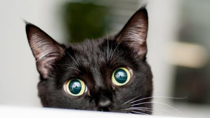
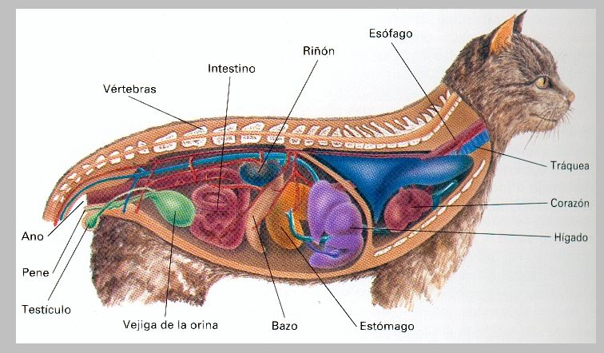

El gato doméstico (Felis silvestris catus), llamado popularmente gato, y de forma coloquial minino, michino, michi, micho, mizo, miz, morroño o morrongo, entre otros nombres, es un mamífero carnívoro de la familia Felidae. Es una subespecie domesticada por la convivencia con el ser humano.
El nombre actual en muchas lenguas proviene del latín vulgar catus. Paradójicamente, catus aludía a los gatos salvajes, mientras que los gatos domésticos, en latín, eran llamados felis.
Como resultado de mutaciones genéticas, cruzamiento y selección artificial, hay numerosas razas. Algunas, como la raza Sphynx o la Peterbald están desprovistas de pelo; otras carecen de cola, como los gatos de la raza Manx, y algunas tienen coloraciones atípicas, como los llamados gatos azules.
El gato se comunica a través de vocalizaciones. Las más populares son su característico maullido y el ronroneo, pero puede aullar, gemir, gruñir y bufar.11 Además, adopta poses o expresiones que informan, a sus congéneres, sus enemigos o sus cuidadores, de su ánimo o sus intenciones.
Junto con el perro, es el animal doméstico más popular, como mascota, como ayuda en la lucha contra roedores o ambas cosas.
Los gatos son animales mamíferos. Esto significa,
que al igual que los humanos, paren pequeños seres vivos que la madre alimenta con su leche y que cuida hasta que sean
lo suficientemente mayores como para ser autónomos. Los gatos son carnívoros
(comen carne) y fácilmente se convierten en depredadores especialmente bien adaptados, de otros animales. Los gatos domésticos
están hechos para cazar pequeñas presas como pájaros y pequeños mamíferos, como los ratones, aunque un gato valiente puede incluso
atacar presas mayores como conejos jóvenes.
El esqueleto es la estructura interna del cuerpo, constituido principalmente por la columna vertebral, las patas traseras y las patas delanteras.
- Protege a los delicados órganos internos.
- El cráneo protege al cerebro y a los órganos sensoriales, como los ojos.
- La pelvis protege los órganos abdominales inferiores como el útero en las hembras.
- Las vértebras (columna vertebral) protegen los nervios que forman la medula espinal.
- Las costillas protegen todos los órganos que se encuentran en el tórax, como el corazón y los pulmones.
Permite el movimiento. Cuando los músculos que se encuentran alrededor de una articulación se contraen, los huesos se mueven y las articulaciones
se doblan. Es la fuerza muscular de las patas traseras del gato lo que le permite saltar y cazar a sus presas.